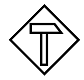
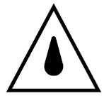

Werden bei Dach-.und Holzbauarbeiten elektrische Betriebsmittel mit Netzanschluss verwendet, müssen diese über besondere Anschlusspunkte betrieben werden.
Siehe
Elektrische Betriebsmittel sind z. B. elektrisch betriebene Bauaufzüge und Bohrmaschinen.
Als besonderer Anschlusspunkt bei Dach- und Montagearbeiten gelten
Kleinstbaustromverteiler spiegeln nicht mehr den Stand der Technik wieder und sind in der praktischen Anwendung nur noch selten zu finden.
Kleinstbaustromverteiler mit wirksamer eigener Erdungsmaßnahme, Schutzverteiler oder ortsveränderliche Schutzeinrichtungen (beide mit PRCD und erweitertem Schutzumfang) dürfen an Steckvorrichtungen ortsfester Anlagen betrieben werden und eignen sich besonders für kleine Baumaßnahmen.
Werden frequenzgesteuerte elektrische Betriebsmittel eingesetzt, muss der Baustromverteiler allstromsensitive FI-Schutzeinrichtung besitzen.
Bewegliche Leitungen, ausgenommen Geräteanschlussleitungen bis 4 m Länge, müssen Gummischlauchleitungen vom Typ H07RN-F oder gleichwertiger Bauart sein.

Steckvorrichtung für erschwerte Bedingungen
Leitungsroller müssen folgenden Bedingungen entsprechen:

Spritzwasserschutz (IP X4)
Beim Anschluss von Betriebsmitteln mit zusammen mehr als 1000 W Leistung ist der Leitungsroller nur im abgewickelten Zustand zu benutzen.
Leitungsroller müssen für den rauen Betrieb (Baustellen) geeignet sein und der Schutzart IP 44 entsprechen.
In der Nähe elektrischer Freileitungen darf nur gearbeitet werden, wenn
Für die Bemessung der Schutzabstände ist das Ausschwingen von Leitungsseilen und der Bewegungsraum der Beschäftigten einschließlich der von ihnen bewegten Materialien zu berücksichtigen.
Siehe
Tabelle 5 Schutzabstände bei Arbeiten in der Nähe elektrischer Freileitungen
| Nennspannung | Schutzabstand |
|---|---|
| bis 1000 V | 1,0 m |
| über 1 kV bis 110 kV | 3,0 m |
| über 110 kV bis 220 kV | 4,0 m |
| über 220 kV bis 380 kV oder bei unbekannter Nennspannung | 5,0 m |
Bei Gewitter besteht die Gefährdung für im Freien arbeitende Beschäftigte durch:
Die Situation ist gefährlich, wenn dem Blitz innerhalb von 15 bis 20 Sekunden ein Donnerschlag folgt. Gefährdete Bereiche, wie z. B. das Dach oder das Gerüst, sollten dann schnellstens verlassen werden und erst wieder nach Beendigung des Gewitters betreten werden.